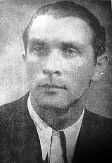

Український письменник, журналіст, перекладач і театральний діяч Зенон Тарнавський народився 09.09.1912р. у м. Самборі на Львівщині. Місцеву гімназію закінчив з відзнакою, вступив до Львівського університету спочатку на юридичний факультет, потім перевівся на філософський. Освіту журналіста отримав у Варшаві, у 1930-их був співредактором газети "Українські вісті".
Театральне мистецтво завжди було у житті Тарнавського чи не на першому місці. Перша, та мабуть найяскравіша вистава за його драмою "Тарас Шевченко" (1936) відбулася у березні 1937 у Снятині, далі протягом 7 місяців покази проводилися майже в усіх містах і містечках Львівщини та Івано-Франківщини з незмінними аншлагами.
Протягом 1942-1944 років був мистецьким керівником театру "Веселий Львів". 1947-го емігрував у Німеччину, працював редактором у газеті й журналі. 1949-го переїхав у США, до кінця життя мешкав у Детройті. Був викладачем історії української культури і театру на українознавчих курсах, засновником і художнім керівником самодіяльної трупи. Значні й вагомі також його критичні театральні статті. А психологічні проблеми акторської творчості часто трапляються в його прозі. Помер 8 серпня 1962 року. Вже після смерті З. Тарнавського 1964-го року видано збірку його новел і нарисів під назвою "Дорога на Високий замок", написану в імпресіоністичній манері.